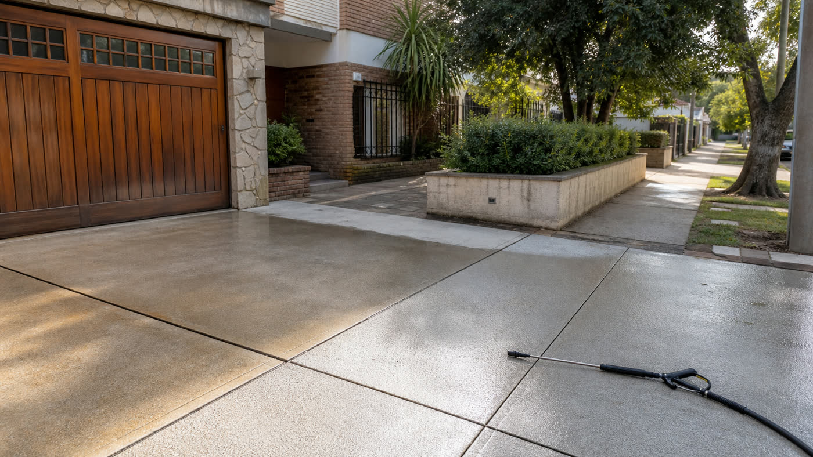

Resumen: veredas, accesos, patios, galerías y entradas de auto son buenos candidatos para hidrolavado cuando la superficie es resistente y tiene buen drenaje.

Qué problemas resuelve el lavado de pisos exteriores
Las veredas y entradas reciben tierra, hojas, agua de lluvia, marcas de neumáticos y suciedad de la calle. En patios y galerías, además, suele aparecer verdín en sectores con sombra. Si se deja avanzar, el piso se ve más viejo y en algunos casos se vuelve resbaloso.
El lavado a presión ayuda a remover suciedad pegada en hormigón, mosaico, cemento, baldosas y algunas piedras. La clave es regular la distancia y no tratar todos los materiales como si fueran iguales.
Cuándo conviene consultar
Hay señales simples: el piso ya no vuelve a su color original con una manguera común, las juntas están oscuras, hay zonas verdes cerca de plantas o el acceso de auto tiene marcas que se notan desde la calle. En esos casos, pedir una cotización por WhatsApp suele ser más práctico que seguir probando productos al azar.
- Veredas con polvo pegado y manchas de lluvia.
- Entradas de auto con barro o marcas de neumáticos.
- Patios con verdín en esquinas húmedas.
- Galerías con suciedad acumulada debajo de muebles.
- Bordes de pileta con manchas superficiales.
Qué mirar antes de lavar
El estado del piso importa. Si hay baldosas flojas, juntas abiertas o piezas quebradas, conviene avisarlo. El objetivo de una limpieza profesional es recuperar la superficie sin levantar partes débiles ni empujar agua hacia lugares que puedan complicar el drenaje.
También hay que revisar hacia dónde corre el agua. Una vereda puede drenar a la calle, pero un patio interno tal vez necesite más cuidado con rejillas, canteros o puertas cercanas.
Por qué sirve para SEO local y para campañas
Este tipo de búsqueda suele tener intención clara: alguien busca hidrolavado de veredas, limpieza de patios o lavado a presión de entradas porque ya tiene un problema visible. Por eso es una guía útil para Google y también para campañas de anuncios que manden tráfico a servicios concretos.
La persona no siempre sabe si pedir limpieza de pisos exteriores, lavado de patio o hidrolavado. Una página clara conecta esas formas de buscar con el mismo servicio, sin forzar palabras clave.
Qué fotos mandar para cotizar
Para presupuestar mejor, conviene mandar una foto general del área completa y otra de cerca donde se vea la suciedad. Si el piso tiene desniveles, rejillas o muebles que mover, un video corto ayuda mucho. También sirve aclarar si hay canilla cerca y si el acceso es directo desde la calle.
Si el trabajo es en San Martín o alrededores, agregar localidad y tipo de superficie ayuda a responder más rápido.